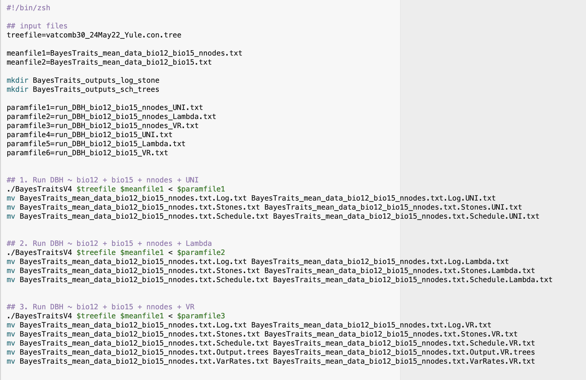
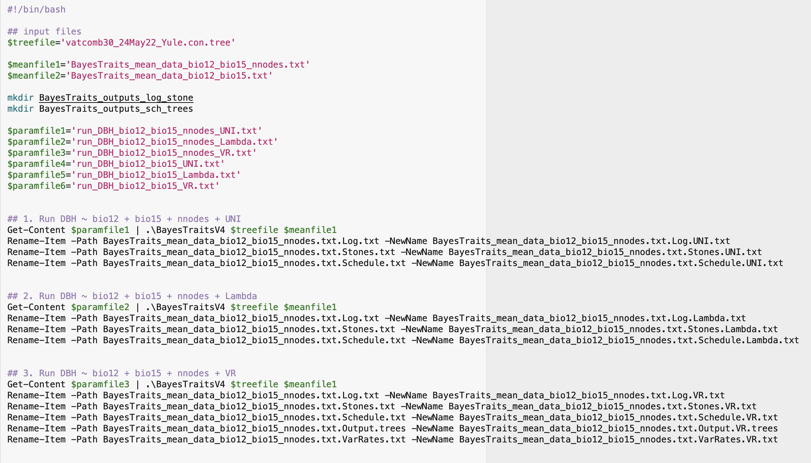
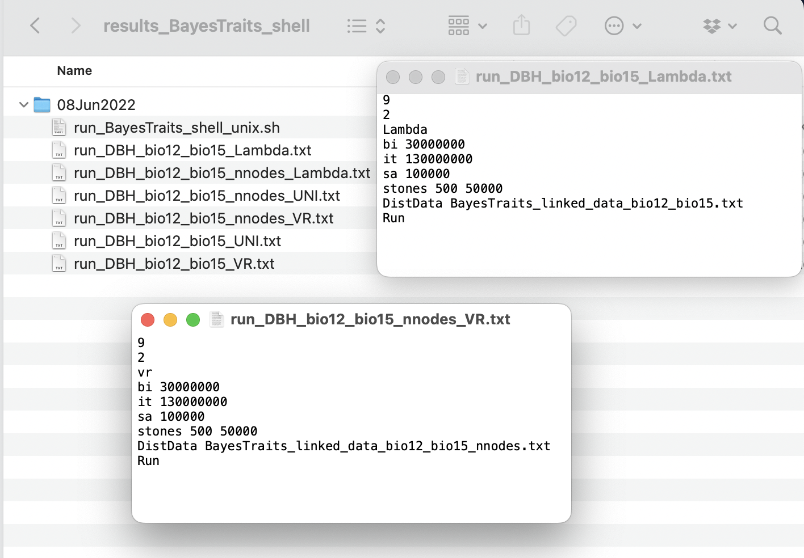
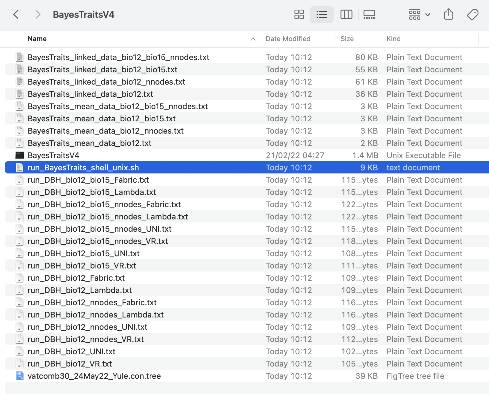

2. Shell scripts for independent contrast regression analysis
Source:vignettes/articles/phyreg_shell.Rmd
phyreg_shell.Rmd
The main goal of the InNOutBT package is to readily
create input data and process output data for Meade & Pagel’s (2022)
BayesTraits
program.
Here in this article, we show how to use InNOutBT’s
function phyreg.shell for producing shell scripts and
associated run commands of BayesTraits phylogenetic independent contrast
regression analyses. Basically, the function phyreg.shell
uses the directory paths to the tree, mean, and linked data files as
created with phyreg.inputs (see article here),
to automatically produce shell scripts in both Unix and Windows
PowerShell formats. The resulting single shell script file can then be
used for running one or multiple BayesTraits phylogenetic regressions
all at once, without manually setting new analyses with new parameters.
The shell script produced with phyreg.shell should thus
have all parameters for all analyses with any defined model. In addition
to saving the shell script directly in the BayesTraits directory, the
function saves all the separate running files with the specified
BayesTraits parameters (bi, it, sa, and st) for any run, depending on
the chosen model of tree transformation. See the BayesTraits
5.0.3 Manual for further details on each of the BayesTraits
parameters available for phylogenetic regression so as to better
understand how to set the arguments of phyreg.shell.
Setup
InNOutBT is not on CRAN yet, but you can install the latest development version from GitHub:
#install.packages("devtools")
devtools::install_github("DBOSlab/InNOutBT")Creating a Unix shell script
Set the argument syst = "unix" to create a shell script
for running the phylogenetic regressions on macOS Monterey.
Note that you should give the path to the folder that contains the
BayesTraits executable file in the argument
BayesTraits_dir, the name of that file in
BayesTraits_exe, and the name of the response variable of
your analysis in the argument responvar. Also, you should
use the argument treetransf to define any or all (listed as
a vector) available tree transformation models with which you want to
run the phylogenetic regressions on your input data. As such, choose
among the models Kappa, Delta, Lambda,
OU (Ornstein–Uhlenbeck), UNI (if you have set a
complete default BayesTraits regression analysis, i.e., assuming uniform
rates of evolution with no other tree transformation models estimated),
VR (if you have used variable rates), or Fabric (if
you want to use the general statistical model that accommodates an
uneven evolutionary landscape as described by Pagel et
al. 2022).
library(InNOutBT)
phyreg.shell(meanfile_dir = "results_BayesTraits_phyreg_input/09Jun2022",
linkfile_dir = "results_BayesTraits_phyreg_input/09Jun2022",
treefile_dir = "Data",
BayesTraits_dir = "/Users/domingoscardoso/BayesTraits",
BayesTraits_exe = "BayesTraitsV5",
responvar = "DBH",
treetransf = c("UNI", "Lambda", "VR", "Fabric"),
Kappa = NULL,
Delta = NULL,
Lambda = NULL,
OU = NULL,
VRLambda = FALSE,
bi = "30000000",
it = "130000000",
sa = "100000",
st = c("500", "50000"),
syst = "unix",
dir_create = "results_BayesTraits_phyreg_shell",
cc_DataTree = TRUE)
Creating a Windows PowerShell script
Set the argument syst = "windows" to create a PowerShell
script for running the phylogenetic regressions on Windows.
phyreg.shell(meanfile_dir = "results_BayesTraits_phyreg_input/09Jun2022",
linkfile_dir = "results_BayesTraits_phyreg_input/09Jun2022",
treefile_dir = "Data",
BayesTraits_dir = "C:/Users/Matt_/Documents/BayesTraits",
BayesTraits_exe = "BayesTraitsV5",
responvar = "DBH",
treetransf = c("UNI", "Lambda", "VR", "Fabric"),
Kappa = NULL,
Delta = NULL,
Lambda = NULL,
OU = NULL,
VRLambda = FALSE,
bi = "30000000",
it = "130000000",
sa = "100000",
st = c("500", "50000"),
syst = "windows",
dir_create = "results_BayesTraits_phyreg_shell",
cc_DataTree = TRUE)
The function generates all running BayesTraits commands for the multiple
regressions, depending on the parameters set in the arguments
treetransf, bi, it,
sa, and st.

Note that because we have set the argument
cc_DataTree = TRUE, the tree, mean data, and linked data
files were also copied directly into the BayesTraits folder.

Note that if you leave any of the arguments Kappa,
Delta, Lambda, and OU as the
default NULL, these tree transformation models will be
estimated, provided that any of them were also listed in the argument
treetransf. But you can also set them as a vector with any
specific value between 0 and 1. For example, if you want to run analyses
with both specific and estimated values for Lambda, then
you have to set a vector such as c(“0.001”, “1.0”,
“Estimate”).
Also, if you define the logical argument VRLambda as
TRUE, then the specific values set for the tree transformation
models in the arguments Kappa, Delta,
Lambda or OU will be considered as separate
runs when using the model of variable rates VR, provided that
you have also chosen this model in the argument
treetransf.
Running the Unix shell script
After using the function phyreg.shell with all the
needed parameters, you have to give the shell script permission to run
automatically all the phylogenetic regression analyses with the
BayesTraits program. You can just follow the steps below.
1. Open the Terminal;
2. Go to the BayesTraits program folder where you
have saved the shell script file .sh and the associated
running and input data files with the function
phyreg.shell. The shell script should be named
run_BayesTraits_phyreg_shell_unix.sh;
3. Execute the following line:
chmod 777 run_BayesTraits_phyreg_shell_unix.sh
4. Then perform the BayesTraits run using the shell
script by executing the following line:
./run_BayesTraits_phyreg_shell_unix.sh
Running the Windows PowerShell script
After using the function phyreg.shell with all the
needed parameters, you have to give the PowerShell script permission to
run automatically all the phylogenetic regression analyses with the
BayesTraits program. You can just follow the steps below, but you may
also want to find further
information on how to use Windows PowerShell.
1. Open PowerShell as Administrator;
2. Go to the BayesTraits program folder where you
have saved the PowerShell script file .ps1 and the
associated running and input data files with the function
phyreg.shell. The PowerShell script should be named
run_BayesTraits_phyreg_shell_windows.ps1;
3. Execute the following line and choose option
[Y]Yes;
Set-ExecutionPolicy -ExecutionPolicy RemoteSigned -Scope
LocalMachine
4. Execute the following line:
Unblock-File -Path
.\run_BayesTraits_phyreg_shell_windows.ps1
5. Then perform the BayesTraits run using the
PowerShell script by executing the following line:
.\run_BayesTraits_phyreg_shell_windows.ps1
See also an associated article on how to automatically create
input files with phyreg.inputs for the phylogenetic
regression analyses, as well as another article on how to use
phyreg.outputs to process
the resulting output files from the analyses.